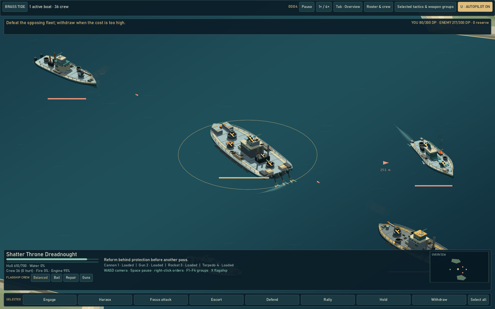

Windows PC · Single player · Fleet combat & trading
Brass Tide The Shatter Coast
Build a motorboat fleet, fit weapons, trade between island harbors and fight fleet battles. Pay your crews, carry supplies and keep damaged boats afloat.


Build and equip your fleet
Start with a small boat and build a fleet from 36 designs, including gunboats, fishing boats, transports, tankers and yachts. Fit machine guns, cannons, rockets and torpedoes to compatible mounts. Change engines and armor to suit each boat's role.
Command fleet battles
Give orders while your flagship runs on autopilot, or take manual control. Battles use a 300-point deployment limit per side. Hull breaches let water in; crews, pumps and repair supplies help keep damaged boats afloat.
Trade between island harbors
Carry goods, take harbor jobs and manage cargo space, fuel, supplies and crew wages. Villages produce materials and build boats with paid labor. Trade and wages use bronze coins.
Explore the ocean
Travel across the Open Seas chart and enter island groups to visit harbors, survey islands and investigate wrecks. Shipping companies, patrols and pirates operate across faction waters.
Windows download
Download your purchased copy from Your games. Extract the ZIP into a folder, then open Brass Tide.exe. Keep your saves and music folders when updating.